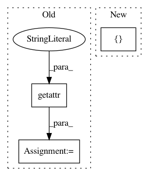

abb4e425ff57acad92d42e92a6c76526a3b49e27,softlearning/samplers/simple_sampler.py,SimpleSampler,sample,#SimpleSampler#,19
Before Change
next_observations=next_observation)
if terminal or self._path_length >= self._max_path_length:
last_path = self.pool.last_n_batch(
self._path_length,
observation_keys=getattr(self.env, "observation_keys", None))
last_path.update({"infos": self._infos})
self._last_n_paths.appendleft(last_path)
self.policy.reset()
After Change
self._current_path["observations"].append(self._current_observation)
self._current_path["actions"].append(action)
self._current_path["rewards"].append([reward])
self._current_path["terminals"].append([terminal])
self._current_path["next_observations"].append(next_observation)
self._current_path["infos"].append(info)
In pattern: SUPERPATTERN
Frequency: 4
Non-data size: 3
Instances
Project Name: rail-berkeley/softlearning
Commit Name: abb4e425ff57acad92d42e92a6c76526a3b49e27
Time: 2019-02-04
Author: hartikainen@berkeley.edu
File Name: softlearning/samplers/simple_sampler.py
Class Name: SimpleSampler
Method Name: sample
Project Name: jazzband/django-debug-toolbar
Commit Name: fe3df822111d3b56000deca354b0bceed7bde9cc
Time: 2013-11-24
Author: aymeric.augustin@m4x.org
File Name: debug_toolbar/settings.py
Class Name:
Method Name:
Project Name: pyinstaller/pyinstaller
Commit Name: 46286a1f455d8e0837f7c2b9e1bbdff1ef858f0f
Time: 2019-08-16
Author: tan.minan@gmail.com
File Name: PyInstaller/hooks/pre_find_module_path/hook-distutils.py
Class Name:
Method Name: pre_find_module_path
Project Name: jazzband/django-debug-toolbar
Commit Name: 4225671177f9f65e873ddbab373e5968c2afa8fc
Time: 2013-12-23
Author: jannis@leidel.info
File Name: debug_toolbar/panels/staticfiles.py
Class Name: StaticFilesPanel
Method Name: get_staticfiles_dirs